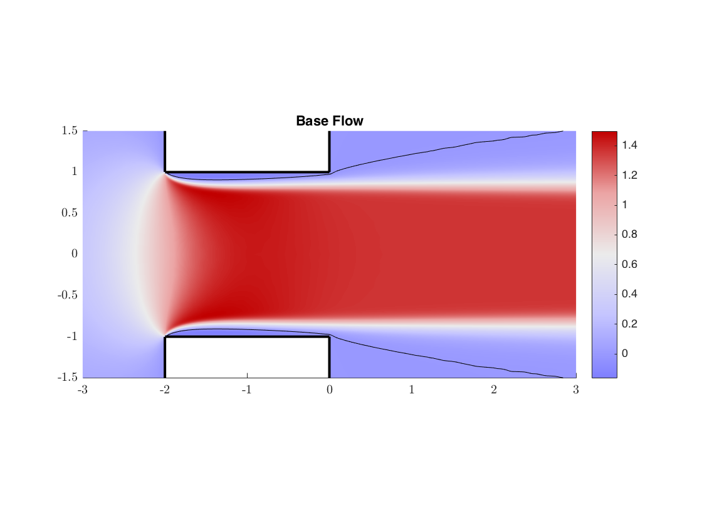
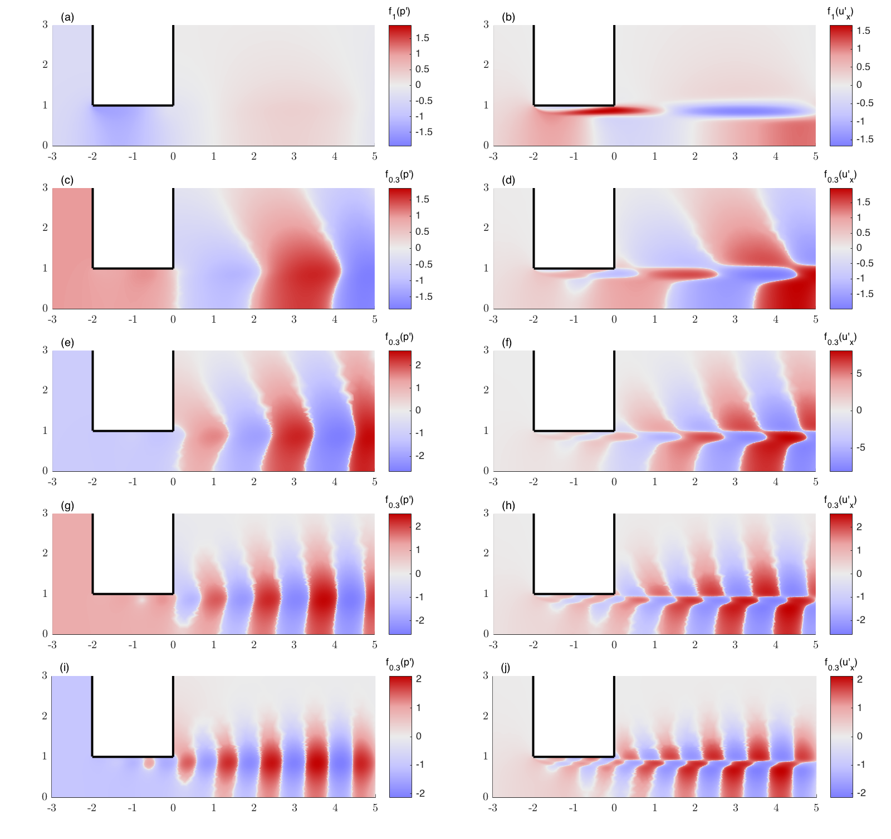

Contents
LNS study of a jet flowing across a circular aperture in a thick plate
Initialization
run('../../SOURCES_MATLAB/SF_Start.m');verbosity=0;
make_it_tight = true;
subplot = @(m,n,p) subtightplot (m, n, p, [0.05 0.05], [0.05 0.01], [0.05 0.01]);
if ~make_it_tight, clear subplot; end
Chapter 1 : Building (or recovering) Adapted Mesh
if(exist('./WORK/MESHES/BaseFlow_adapt7_Re1500.txt')==0)
bf = SmartMesh_Hole_MeshM2;
else
myrm('./WORK/Mapping.ff2m')
ffmesh = importFFmesh('./WORK/MESHES/mesh_adapt7_Re1500.msh');
Params = [4 1e30 1 0. 20 1e30];
ffmesh = SF_SetMapping(ffmesh,'mappingtype','jet','mappingparams',Params);
bf = importFFdata(ffmesh,'./WORK/MESHES/BaseFlow_adapt7_Re1500.ff2m');
end
Chapter 2 : plot base flow (something resembling fig. 4)
bf = SF_BaseFlow(bf,'Re',1600);
SF_Plot(bf,'ux','title','Base Flow','colormap','redblue','xlim',[-3 3],'ylim',[-1.5 1.5],'contour','on','clevels',[0 0],...
'boundary','on','bdlabels',2,'bdcolors','k','symmetry','XS');
hold on;
pause(0.1);
Note: To improve runtime build MEX function ffplottri2grid() from ffplottri2grid.c
Note: To improve runtime build MEX function ffplottri2grid() from ffplottri2grid.c

CHAPTER 3 : Forced structures
bf = SF_BaseFlow(bf,'Re',1600);
bfRe16000 = bf;
omega = 0.8;Re = 1600; chi=1;
foA = SF_LinearForced(bf,omega);
omega = 1.7;Re = 1600; chi=1;
foB = SF_LinearForced(bf,omega);
omega = 2.5;Re = 1600; chi=1;
foC = SF_LinearForced(bf,omega);
omega = 3.6;Re = 1600; chi=1;
foD = SF_LinearForced(bf,omega);
omega = 4.5;Re = 1600; chi=1;
foE = SF_LinearForced(bf,omega);
Plot pressure and axial velocity compoent of the forced structures
(figure 10 of the paper)
close all;
figure(11);
subplot = @(m,n,p) subtightplot (m, n, p, [0.05 0.05], [0.05 0.03], [0.05 0.01]);
Re = 1600;
subplot(5,2,1);
SF_Plot(foA,'p1','boundary','on','colormap','redblue','colorrange','cropcentered','xlim',[-3 5],'ylim',[0 3],...
'boundary','on','bdlabels',2,'bdcolors','k','cbtitle','f_1(p'')','logsat',1);
text(-2.8,3.2,'(a)');
subplot(5,2,2);
SF_Plot(foA,'ux1','boundary','on','colormap','redblue','colorrange','cropcentered','xlim',[-3 5],'ylim',[0 3],...
'boundary','on','bdlabels',2,'bdcolors','k','cbtitle','f_1(u''_x)','logsat',1);
text(-2.8,3.2,'(b)');
subplot(5,2,3);
SF_Plot(foB,'p1','boundary','on','colormap','redblue','colorrange','cropcentered','xlim',[-3 5],'ylim',[0 3],...
'boundary','on','bdlabels',2,'bdcolors','k','cbtitle','f_{0.3}(p'')','logsat',.3);
text(-2.8,3.2,'(c)');
subplot(5,2,4);
SF_Plot(foB,'ux1','boundary','on','colormap','redblue','colorrange','cropcentered','xlim',[-3 5],'ylim',[0 3],...
'boundary','on','bdlabels',2,'bdcolors','k','cbtitle','f_{0.3}(u''_x)','logsat',.3);
text(-2.8,3.2,'(d)');
subplot(5,2,5);
SF_Plot(foC,'p1','boundary','on','colormap','redblue','colorrange','cropcentered','xlim',[-3 5],'ylim',[0 3],...
'boundary','on','bdlabels',2,'bdcolors','k','cbtitle','f_{0.3}(p'')','logsat',.3);
text(-2.8,3.2,'(e)');
subplot(5,2,6);
SF_Plot(foC,'ux1','boundary','on','colormap','redblue','colorrange','cropcentered','xlim',[-3 5],'ylim',[0 3],...
'boundary','on','bdlabels',2,'bdcolors','k','cbtitle','f_{0.3}(u''_x)','logsat',1);
text(-2.8,3.2,'(f)');
subplot(5,2,7);
SF_Plot(foD,'p1','boundary','on','colormap','redblue','colorrange','cropcentered','xlim',[-3 5],'ylim',[0 3],...
'boundary','on','bdlabels',2,'bdcolors','k','cbtitle','f_{0.3}(p'')','logsat',.3);
text(-2.8,3.2,'(g)');
subplot(5,2,8);
SF_Plot(foD,'ux1','boundary','on','colormap','redblue','colorrange','cropcentered','xlim',[-3 5],'ylim',[0 3],...
'boundary','on','bdlabels',2,'bdcolors','k','cbtitle','f_{0.3}(u''_x)','logsat',.3);
text(-2.8,3.2,'(h)');
subplot(5,2,9);
SF_Plot(foE,'p1','boundary','on','colormap','redblue','colorrange','cropcentered','xlim',[-3 5],'ylim',[0 3],...
'boundary','on','bdlabels',2,'bdcolors','k','cbtitle','f_{0.3}(p'')','logsat',.3);
text(-2.8,3.2,'(i)');
subplot(5,2,10);
SF_Plot(foE,'ux1','boundary','on','colormap','redblue','colorrange','cropcentered','xlim',[-3 5],'ylim',[0 3],...
'boundary','on','bdlabels',2,'bdcolors','k','cbtitle','f_{0.3}(u''_x)','logsat',.3);
text(-2.8,3.2,'(j)');
pos = get(gcf,'Position'); pos(3) = 800; pos(4)=pos(3)*1.18;set(gcf,'Position',pos);
saveas(gcf,['ForcedModes_chi', num2str(chi), '_Re',num2str(Re),'.png'],'png');
saveas(gcf,['ForcedModes_chi', num2str(chi), '_Re',num2str(Re), '.fig'],'fig')

Chapter 4 : compute Eigenmodes
Re =1500;
bf = SF_BaseFlow(bf,'Re',Re);
[ev,em2D] = SF_Stability(bf,'shift',-2.1i,'m',0,'nev',1,'type','D','solver','StabAxi_COMPLEX_m0.edp');
Re =1700;
bf = SF_BaseFlow(bf,'Re',Re);
[ev,em3D] = SF_Stability(bf,'shift',-4.1i,'m',0,'nev',1,'type','D','solver','StabAxi_COMPLEX_m0.edp');
exportFF_tecplot(em2D(1),['Eigenmode_chi', num2str(chi), '_Re',num2str(Re),'_ModeH2','.plt']);
exportFF_tecplot(em3D(1),['Eigenmode_chi', num2str(chi), '_Re',num2str(Re),'_ModeH3','.plt']);
# Stability calculation completed, eigenvalue = 0.15588-2.1005i ; converged in 32 iterations
# Stability calculation completed, eigenvalue = 0.0099396-4.171i ; converged in 18 iterations
PROGRAM exportFF_tecplot : exporting data in tecplot format
P1 COMPLEX field : ux1
P1 COMPLEX field : uy1
P1 COMPLEX field : p1
P1 COMPLEX field : vort1
/bin/bash: tec360: command not found
END PROGRAM exportFF_tecplot
PROGRAM exportFF_tecplot : exporting data in tecplot format
P1 COMPLEX field : ux1
P1 COMPLEX field : uy1
P1 COMPLEX field : p1
P1 COMPLEX field : vort1
/bin/bash: tec360: command not found
END PROGRAM exportFF_tecplot

Chapter 4b : FIGURES FOR EIGENMODES (figure 14 of the paper)
make_it_tight = true;
subplot = @(m,n,p) subtightplot (m, n, p, [0.05 0.05], [0.05 0.01], [0.05 0.01]);
if ~make_it_tight, clear subplot; end
figure(33);
subplot(2,2,1);
SF_Plot(em2D(1),'p1','colormap','redblue','colorrange','cropcentered','xlim',[-3 5],'ylim',[0 3],...
'boundary','on','bdlabels',2,'bdcolors','k','cbtitle','f_1(p'')','logsat',1);
text(-2.8,3.2,'(a)');
subplot(2,2,2);hold on;
SF_Plot(em2D(1),'ux1','colormap','redblue','colorrange','cropcentered','xlim',[-3 5],'ylim',[0 3],...
'boundary','on','bdlabels',2,'bdcolors','k','cbtitle','f_1(u''_x)','logsat',1);
text(-2.8,3.2,'(b)');
subplot(2,2,3);
SF_Plot(em3D,'p1','colormap','redblue','colorrange','cropcentered','xlim',[-3 5],'ylim',[0 3],...
'boundary','on','bdlabels',2,'bdcolors','k','cbtitle','f_1(p'')','logsat',1);
box on; text(-2.8,3.2,'(c)');
subplot(2,2,4);
SF_Plot(em3D,'ux1','colormap','redblue','colorrange','cropcentered','xlim',[-3 5],'ylim',[0 3],...
'boundary','on','bdlabels',2,'bdcolors','k','cbtitle','f_1(u''_x)','logsat',1);
box on; text(-2.8,3.2,'(d)');
pos = get(gcf,'Position'); pos(3) = 800;pos(4)=pos(3)*.4;set(gcf,'Position',pos);
saveas(gcf,['EigenModes_chi', num2str(chi),'.png'],'png');
saveas(gcf,['EigenModes_chi', num2str(chi),'.fig'],'fig')
pause(0.1);

Chapter 5 : Compute Adjoint Eigenmodes / sensitivity (readapt mesh)
Re =1500;
bf = SF_BaseFlow(bf,'Re',Re);
[ev,em2S,em2D,em2A] = SF_Stability(bf,'shift',-2.1i,'m',0,'nev',1,'type','S','solver','StabAxi_COMPLEX_m0.edp');
bf = SF_Adapt(bf,em2S,em2A,'Hmax',0.25);
[ev,em2S,em2D,em2A] = SF_Stability(bf,'shift',-2.1i,'m',0,'nev',1,'type','S','solver','StabAxi_COMPLEX_m0.edp');
Re =1700;
bf = SF_BaseFlow(bf,'Re',Re);
[ev,em3S,em3D,em3A] = SF_Stability(bf,'shift',-4.14i,'m',0,'nev',1,'type','S','solver','StabAxi_COMPLEX_m0.edp');
bf = SF_Adapt(bf,em3A,em3S,'Hmax',0.25);
[ev,em3S,em3D,em3A] = SF_Stability(bf,'shift',-4.14i,'m',0,'nev',1,'type','S','solver','StabAxi_COMPLEX_m0.edp');
figure(34);
subplot(2,2,1);
SF_Plot(em2A,'ux1Adj','colormap','redblue','colorrange',[-15 15],'xlim',[-3.5 .5],'ylim',[0.5 2],...
'boundary','on','bdlabels',2,'bdcolors','k','cbtitle','u''_{x,adj}');
text(-3.45,2.1,'(a)');
subplot(2,2,2);
SF_Plot(em2S,'sensitivity','colormap','ice','colorrange',[0 0.4],'xlim',[-2.25 1.75],'ylim',[0 1.5],...
'boundary','on','bdlabels',2,'bdcolors','k','cbtitle','S_w','colorbar','eastoutside');
text(-2.2,1.6,'(b)');
subplot(2,2,3);
SF_Plot(em3A,'ux1Adj','colormap','redblue','colorrange',[-30 30],'xlim',[-3.5 .5],'ylim',[0.5 2],...
'boundary','on','bdlabels',2,'bdcolors','k','cbtitle','u''_{x,adj}');
box on; text(-3.45,2.1,'(c)');
subplot(2,2,4);
SF_Plot(em3S,'sensitivity','colormap','ice','colorrange',[0 0.4],'xlim',[-2.25 1.75],'ylim',[0 1.5],...
'boundary','on','bdlabels',2,'bdcolors','k','cbtitle','S_w');
box on; text(-2.2,1.6,'(d)');
pos = get(gcf,'Position'); pos(3) = 800;pos(4)=pos(3)*.4;set(gcf,'Position',pos);
saveas(gcf,['EigenModes_Adj_chi', num2str(chi),'.png'],'png');
saveas(gcf,['EigenModes_Adj_chi', num2str(chi),'.fig'],'fig')
pause(0.1);